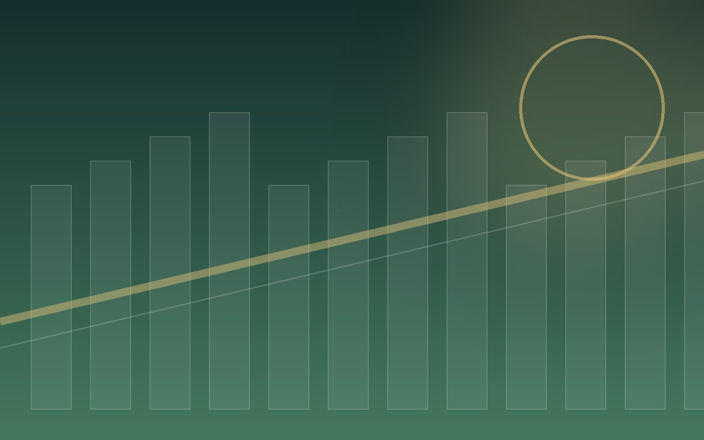

정밀 선별
SOYBEAN SORTING

NEXHARBOR BUSINESS
CLEAN SOYBEANS, HEALTHY LIFE
깨끗한 원료로 만드는 건강한 식문화
현장을 이해하는 물류, 데이터로 완성하는 운영
각 화물과 고객의 조건을 세밀하게 분석해 가장 안전하고 효율적인 운영 방식을 설계합니다.
비유전자 변형
품질 관리
처음부터 끝까지 연결되는 서비스
 IMAGE SLOT · 1600 × 1000
IMAGE SLOT · 1600 × 1000 IMAGE SLOT · 1600 × 1000
IMAGE SLOT · 1600 × 1000